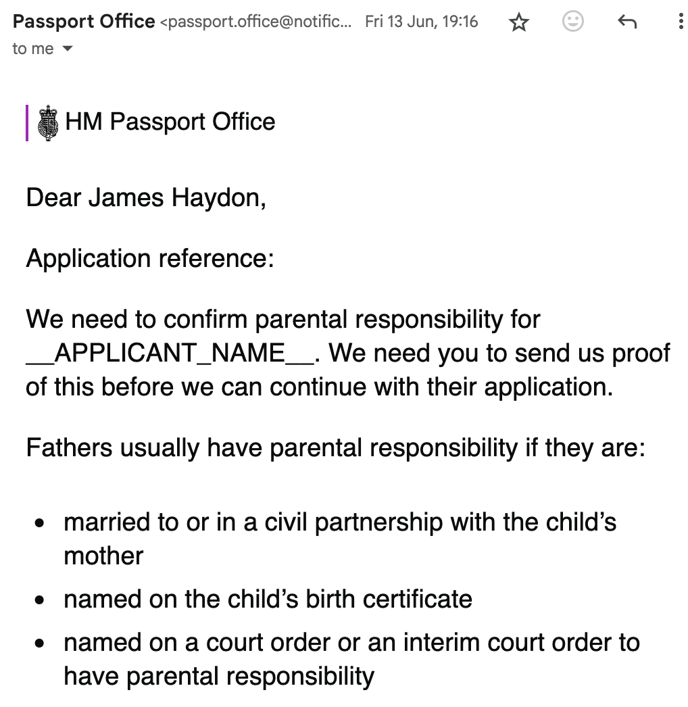

There's a trend at the moment of solving online games with programming, let's do one from the UK called Passport Application, which is developed by "His Majesty's Passport Office" or HMPO. It's a cultural phenomenon in the UK: despite being quite expensive (about £100 just to start) for the standard online version (a masterpiece of minimalist design, entirely text-based), most British play the game, and do so every 10 years or so.
It's an adventure puzzle document collection game. The premise is to collect enough artefacts, scattered throughout various bureaucratic institutions, until you can prove the statement "Applicant is British" according to an extremely complex set of rules, written in arcane language, in various texts called "acts of parliament". The prize for winning is a little booklet with a date inside that indicates when you can play again.
Hardcore players opt for an entirely paper-based version that relies entirely on postal mail. The puzzle-sheets for that look like this:

There are various instructions for what collectibles need to be gathered, presented in game instruction manuals such as:

The game starts easy enough, you just need to enter basic facts about the applicant, and take a photo of them. But things get tougher from there, with various side-quests, all designed to be fun:
- HMPO sometimes decides to send you on an "identity confirmation" side quest. This involves finding someone whose job/status is one of a finite list, things like "accountant" or "civil servant", but they also have some fun ones like "chiropodist", "funeral director" and "airline pilot". Once you've managed to track down such a person, preferably one who knows you, you must socially engineer them into filling in some webforms.
- The main mechanic of the game involves sending in "original" documents. Documents that are not in english need to be paired with an "officially certified translation", which triggered some cool side-quests in my case like "how to get a certified translation of a French marriage certificate, which is in my possession in Japan, and have both sent to HMPO by mail".
- Some documents relate to family members, and so you need to start getting the whole family involved in a co-op mode.
- And of course the bureaucratic institutions you must request some documents from have their own arcane gameplay.
All this keeps the game interesting and fun, taking weeks and sometimes months to complete. Non-British people aren't really supposed to play, but seeing as proving Britishness is the whole object of the game, it's actually open to anyone! I thoroughly encourage you to give it a go.
So this time I was playing on behalf of my daughter, because I'd already completed the game recently, and besides she's too young to play on her own. I chose the "first child passport born abroad" difficulty level, so expected it to be quite challenging from the outset. After a round of waiting, the first round of document requests came through. Quite a lot of documents, most of which seemed quite unrelated to the main objective, but that's the game. I started collecting them but some were quite difficult to obtain so I decided to use the chat feature. You see your game is handled by a person called an "examiner", they are the ones who send you on document gathering quests, according to their interpretation of the rules. To add an extra layer of difficulty, you can't directly communicate with this person, you can only talk to "advice agents" using a chat or telephone service. These agents offer advice on side-quests, but nothing they say is official. They can pass along questions to the examiner, but that triggers a few days of waiting time, sometimes up to 10 days in my case, a tactic used to build suspense.
Quite quickly the chat service told me that 75% of the initial documents requested were unnecessary; it was all just a misdirection! So another round of waiting, and then more document requests. You get document requests via emails like this:
The document requests are paired with some cryptic explanations that are somewhat helpful but still vague enough to keep the game interesting. Why don't I have parental responsibility for __APPLICANT_NAME__? One of the listed condition is "named on the child's birth certificate", which I am, and was already sent to them, along with the Japanese→English translation. Maybe they also need proof of the first condition, despite the second, and despite this document not having been requested earlier in the process. In any case I can't satisfy the third. Or maybe some automated system has messed up; the broken HTML templating indicates that maybe APPLICANT_NAME == NULL in some database, who knows.
Another round of document requests, one for a document that doesn't exist, another round of helpline. More explorations of conversation trees with NPCs, an alternative path to the goal is found, more documents. This culminated in a rare relic request:
Applicant's Paternal great-grandfather's birth certificate and marriage certificate
One of these documents is almost 100 years old! Of course applicant's Paternal great grandfather is ambiguous, since most people have 2 of them, but this is standard misdirection at this point and all part of the fun. After decrypting this to applicant's father's father's father's birth certificate I started to wonder why such a distant document would be requested. Engaging the advice agents didn't help much, one launched into explanations as to why
$$\text{birthCirt}(\text{father}^2(\text{applicant}))$$ was needed even though this document was already in their possession, and I was asking about
$$\text{birthCirt}(\text{father}^3(\text{applicant})).$$ One admitted they had no idea why the document was requested.
So what's going on here? It's important to understand the sort of logic used by HMPO in the Passport Application game. It's called Bureaucratic Logic, it derives from Constructive Logic, in that one cannot just make valid arguments, that would be too easy, one has to construct proofs of a particular nature to back them up. Constructive logic has witnesses, Bureaucratic logic has original documents.
For example, like constructive logic, HMPO doesn't allow you to use exclusive middle: $P \lor \lnot P$ ($P$ or not $P$) is not in general valid. The gameplay is greatly influenced by answers to questions such as "was applicant's father's father born in the UK or not born in the UK?" But you can't just say "yes one of those is true" and then provide documents for both resulting scenarios. That would be using exclusive middle. You must commit to one alternative and provide a document for that. This is were it's important to remember that it's not about actually demonstrating citizenship, for which exclusive middle would be a perfectly valid argument, Passport Application is about having fun gathering documents. Don't question the rules too much or you'll stop having fun.
The second piece of the puzzle is in the guidance that accompanies the document requests:
British passports are issued to those who have a claim to British nationality under the British Nationality Act 1981. This is decided mainly by a person’s place and date of birth and their parents’ places and dates of birth. A person born outside of the UK after 31 December 1982 is normally a British citizen only if, at the time of their birth one parent is a British citizen otherwise than by descent, such as through birth in the UK or registration or naturalisation as a British citizen.
Note that the Britishness of a person can be dependent on the Britishness of their parents. The final piece of the puzzle is that HMPO doesn't trust its own passports records to prove Britishness. This is the mechanic which, in some cases, kicks off recursive document requests up the family tree, until a base case is reached. What are the base cases? A base case is an ancestor whose Britishness does not depend on a parent, e.g. someone who was naturalised, or born in the UK before 1983 (which makes one unconditionally british regardless of parents). That's right, further into the future we get from 1983, the taller these call-stacks can get. Fun!
This is how the request chain pertaining to this document played out in my case (in parallel to other requests), quotes are from HMPO emails:
-
Date initial documents received by HMPO: 7 June: applicant's birth certificate, applicant's father's birth certificate
-
Request (12 June)
Send documents from their father’s own father
As APPLICANT’s father was also born after 1st January 1983, we will also need evidence of their claim to British citizenship. For this reason, we need their own father’s birth certificate.
-
Request (26 June)
Send documents from their great paternal grandparent
As APPLICANT’s grandparent was born abroad, we will also need evidence of their claim to British citizenship. For this reason, we need to see documents from APPLICANT's paternal great grandfather.
We need their:
birth certificate marriage certificate
Note that the recursion is playing out via email.
At this point I did what any sane person would do, I reached for a logic programming language and decided to encode the rules in the hope of figuring out what was going on. Is it possible to write some code which could have produced the full list of required documents upfront, with no confusion, and perfect explanations? Of course this would ruin all the fun of the game, which is why HMPO doesn't do it, but let's forge ahead.
Haskell code
(Full code is on GitHub.)
At first I started encoding the rules in Prolog, but switched to Haskell's LogicT monad after a while. The basic goal here is to produce the full list of documents required for the application. But this isn't quite right: because there are several ways one can claim Britishness, there are several sets of documents that can work, and you only need one of them. So really one is looking for a function that returns Set (Set Document), where
data Parent = Mother | Father
deriving (Show, Eq, Ord)
data Person = Applicant | Parent Parent Person
deriving (Show, Eq, Ord)
data Document
= BirthCertificate Person
| MarriageCertificate Person Person
| NaturalizationCertificate Person
| Passport Person
-- more documents
deriving (Show, Eq, Ord)
But this is also unsatisfying, because you want to know why a certain document set is enough. So this is really a proof-search problem, and we proceed in two stages:
- we use
LogicTto enumerate all theProofs of Britishness for the applicant, given some information about them, and - for each
Proofwe compute theSet (Set Document)that is needed to satisfy that proof.
This two-staged approach is what made me switch to Haskell, though I'm sure someone more experienced with Prolog would have made it work.
So we define a simple proof type:
data Proof
= -- Deriving britishness via a parent, and their proof of britishness
ViaParent Person Proof
| -- Britishness via two claims.
And Proof Proof
| -- Foundational evidence.
Evidence Predicate
deriving (Show)
This type could be made much more complex, detailing each rule that was used, but this simpler type was at least enough for my purposes. One feature I wanted was that one would not need to provide all the information upfront, instead questions would be asked interactively, and only if needed. Furthermore, previous facts should be retained and used for all branches, backtracking, etc. So we need IO and State, and we want the state to be global across all branches:
data Knowledge = SureYes | SureNo | Unsure
deriving (Eq)
type Claims = Map Predicate Knowledge
type M a = StateT Claims (LogicT IO) a
Here Predicates are the sorts of things that are true of a person and affect how the rules of the game play out:
data Predicate
= IsBritish Person
| Settled Person
| BornBefore Int Person
| BornInUK Person
| BornAfter Int Person
| Naturalized Person
| Years3LivingInUK Person
| IsBritOtbd Person
| Married Person Person
deriving (Show, Eq, Ord)
Here is then the root function for Britishness:
-- | Is a person british?
brit :: Person -> M Proof
brit p =
do
check (IsBritish p)
byBirth <|> naturalised
where
byBirth =
ifThenElse
(evidence (BornInUK p))
(britBornInUk p)
(britBornAbroad p)
naturalised = evidence (Naturalised p)
The check function here interacts with the user, to avoid launching into an investigation if the user knows that person is not british.
A person is brit either byBirth or naturalised. Naturalisation is the simplest, as a single certificate is then the sole document needed. Britishness by birth forks mainly on whether or not the person was born in the UK, and we go to sub-routines:
-- | UK-born citizenship (pre-1983 or via parent)
britBornInUk :: Person -> M Proof
britBornInUk p = evidence (BornBefore 1983 p) `orElse` britBornInUkViaParent p
-- | UK-born citizenship via parent (used for post-1983 births)
britBornInUkViaParent :: Person -> M Proof
britBornInUkViaParent p = viaParent p (\parent -> brit parent `orElse` settled parent)
People born in the UK before 1983 are a base case, they are unconditionally british. Otherwise they acquire it via at least one their parents, who must be either British themselves or "settled" at time of birth. The orElse function here is similar to <|>, but doesn't include proofs from the second branch at all if the first is successful (<|> accumulates proofs from both branches). E.g. if brit parent is true then settled parent doesn't apply: there is no notion of "settled in the UK" for British people.
When not born in the UK things are more complex:
-- | British citizenship for those born abroad
britBornAbroad :: Person -> M Proof
britBornAbroad p =
viaParent p $ \parent ->
britOtbd parent `orElse` and (brit parent) (evidence (Years3LivingInUK parent))
-- | British otherwise than by descent (BOTD)
britOtbd :: Person -> M Proof
britOtbd p = do
a <- question (IsBritOtbd p)
guard (a /= SureNo)
evidence (Naturalised p) `orElse` britOtbdUkBorn `orElse` bornCrownService p
where
britOtbdUkBorn = and (evidence (BornInUK p)) (britBornInUk p)
bornCrownService :: Person -> M Proof
bornCrownService p = viaParent p $ \parent -> do
check (CrownService parent)
and (brit parent) (evidence (CrownService parent))
When not born in the UK, you get citizenship from your parents in the usual way only if there is evidence of 3 years of consecutive living in the UK1, or if born from a person that is British otherwise than by descent (BOTBD). This is a person with "super Britishness", they can confer citizenship to their children unconditionally (well, apart from having to play hard games of Passport Application). The basic idea is that someone is BOTBD if they didn't become British purely via a parent. E.g. they were naturalised, or born in the UK, etc. There are many edge-cases in the rules, and I've only coded those that are most relevant to my case. One of them is bornCrownService, this says that one is still BOTBD if born abroad because a parent was working in "Crown Service", e.g. in an embassy. This happens to be the case of $\text{birthCirt}(\text{father}^3(\text{applicant}))$ during the birth of $\text{birthCirt}(\text{father}^2(\text{applicant}))$, but is this relevant? We'll have to wait till we've coded enough to run this program.
A lot of these functions rely on a higher order function viaParent, which mediates how citizenship is passed down to children:
viaParent :: Person -> (Person -> M Proof) -> M Proof
viaParent p cond = viaMother <|> viaFather
where
via parent = ViaParent (Parent parent p) <$> cond (Parent parent p)
viaMother = via Mother
viaFather =
ifThenElse
(evidence (BornAfter 2006 p))
(via Father)
(and (married (Parent Father p) (Parent Mother p)) (via Father))
This takes a person, and a condition for a parent, and produces a proof of Britishness for p as long as cond can be proved for one of p's parents. There is an extra complication here relating to laws surrounding "illegitimate" children born before 2006, so an extra check for marriage is required in some cases. There are ways around this not codified here ("registration"). There are other sexist clauses too, about only fathers passing on Britishness in some cases, that I also haven't codified here. It's interesting that even though some of these laws no longer apply, they apply historically when trying to work out if an ancestor was british. That's right, to play Passport Application you need to consult laws from many different times!
To run the code we observeAllT (evalStateT m Map.empty), the Map.empty indicating we start with no knowledge. Once a proof has been found we use docs :: Proof -> Logic (Set Document) to produce the needed documents for that path to citizenship. This will mostly list out documents for foundational evidence, and e.g. make sure that when ViaParent is used, a birth certificate linking parent and child is produced.
Let's run it!
ghci> run (brit Applicant)
? : Applicant is british
y
? : Applicant was born in UK
n
? : Applicant's Mother is british otherwise than by descent
n
? : Applicant was born after 2006
y
? : Applicant's Father is british otherwise than by descent
y
? : Applicant's Father was born in UK
y
? : Applicant's Father was born before 1983
n
? : Applicant's Father's Mother is british
n
? : Applicant's Father's Mother was settled at time of birth
y
? : Applicant's Father was born after 2006
n
? : Applicant's Father's Father was married to Applicant's Father's Mother at time of birth
y
? : Applicant's Father's Father is british
...
This goes on for quite some questions, 37 in my case. You can answer question like Applicant's Mother is british otherwise than by descent with "dk" (don't know), and in this case it will explore the tree for you, the main use is not exploring this branch if you do know it is futile.
Once all the citizenship proofs are produced, they are printed and possible document sets are produced:
Applicant has 3 proof(s) of britishness:
-----------
Proof 1:
• Applicant was born after 2006
• Via Applicant's Father's britishness:
• Applicant's Father was born in UK
• Via Applicant's Father's Mother's britishness:
Applicant's Father's Mother was settled at time of birth
Possible doc sets:
• - Birth certificate for Applicant,
- Birth certificate for Applicant's Father,
- Settled status document for Applicant's Father's Mother
-----------
Proof 2:
• Applicant was born after 2006
• Via Applicant's Father's britishness:
• Applicant's Father was born in UK
• • Applicant's Father's Father was married to Applicant's Father's Mother at time of birth
• Via Applicant's Father's Father's britishness:
Via Applicant's Father's Father's Mother's britishness:
• Applicant's Father's Father's Mother was born in UK
• Applicant's Father's Father's Mother was born before 1983
Possible doc sets:
• - Birth certificate for Applicant,
- Birth certificate for Applicant's Father's Father's Mother,
- Birth certificate for Applicant's Father,
- Birth certificate for Applicant's Father's Father,
- Marriage certificate for Applicant's Father's Father and Applicant's Father's Mother
-----------
Proof 3:
• Applicant was born after 2006
• Via Applicant's Father's britishness:
• Applicant's Father was born in UK
• • Applicant's Father's Father was married to Applicant's Father's Mother at time of birth
• Via Applicant's Father's Father's britishness:
• Applicant's Father's Father's Father was married to Applicant's Father's Father's Mother at time of birth
• Via Applicant's Father's Father's Father's britishness:
• Applicant's Father's Father's Father was born in UK
• Applicant's Father's Father's Father was born before 1983
Possible doc sets:
• - Birth certificate for Applicant,
- Birth certificate for Applicant's Father,
- Birth certificate for Applicant's Father's Father,
- Birth certificate for Applicant's Father's Father's Father,
- Marriage certificate for Applicant's Father's Father and Applicant's Father's Mother,
- Marriage certificate for Applicant's Father's Father's Father and Applicant's Father's Father's Mother
And there it is, in Proof 3:
Birth certificate for Applicant's Father's Father's Father
The "Crown Service" status of $\text{birthCirt}(\text{father}^3(\text{applicant}))$ caused quite some confusion in my case, because $\text{birthCirt}(\text{father}^2(\text{applicant}))$ was indeed born abroad, causing some amount of recursion. But hilariously the crown service of $\text{birthCirt}(\text{father}^3(\text{applicant}))$ turns out to be totally irrelevant, indeed the BOTBD status of $\text{birthCirt}(\text{father}^1(\text{applicant}))$ is already derived from being born in the UK and simple Britishness of $\text{birthCirt}(\text{father}^2(\text{applicant}))$. But this simple Britishness still needs to be established, the the recursion to $\text{birthCirt}(\text{father}^2(\text{applicant}))$ still occurs.
Interestingly, the proof that HMPO has selected for my case is the longest and most complex of the 3, I assume that when there are several choices they send the player down the most complex one, for extra fun. Indeed Proof 1 is quite simple, it requires only proving a settled status of one ancestor and that's it. Nationality via non-british ancestors is often much simpler, because these cases are non-recursive. Proof 2 is also slightly more optimized, because it relies on Birth certificate for Applicant's Father's Father's Mother, which therefore bypasses the need for a marriage certificate, needed in Proof 3 to prove "legitimacy" of Applicant's Father's Father2.
Proofs relying on Britishness bottom out when reaching a person born before 1983 in the UK, the further we get from this date, the longer the proofs become. This applies, at least in theory, even when everyone involved is born in the UK. In practice this doesn't happen because HMPO doesn't actually apply the laws as written in the act, they have their own guidance documents, and act using the principle of balance of probabilities, and there seems to be guidance indicating that for standard applications from the UK for people born in the UK, one can use "Main Index" (their internal passport database). So you have to play on "hard mode", e.g. birth abroad, which triggers some global "extra scrutiny" flag, which prevents the use of "Main Index" in all recursive calls.
Extra notes
-
There are several places where I have used
orElse, but<|>could be used instead. As mentioned above,<|>will explore both branches, butorElseonly explores the second branch if the first completely fails. In the case ofbrit parent `orElse` settled parentthis is completely valid, but in some of the other situations it's not so simple. This one for example:
britOtbd parent `orElse` and (brit parent) (evidence (Years3LivingInUK parent))really could be an
<|>, and in my case it makes for much more proofs of citizenship. But it involves an extra level of bureaucratic process ("Registration"), so it seems HMPO will try to exhaustbritOtbd parentbefore trying the second branch. -
Some things are not tracked carefully enough, for example there are something which have to be true at certain times, e.g. some people need to be married or settled specifically at the time some other person was born. But this wouldn't be hard to do.
-
The above is mostly just an encoding of the part of the law that was applicable to my case, or that I found interesting, the full thing would need much more code, and lots and lots of edge-cases.
-
Should such things be automated more? It seems clear that this would have been useful in my case, if I was given access to such software I could have produced the correct set of documents much faster, and understood why things got complex. I think institutions like HMPO shy away from such software because UK nationality law is extremely nuanced, so if a computer program gives a false positive in some case it might cause a lot of trouble, with people complaining they aren't being given a passport even though "computer says yes". And full automation, replacing human expertise, can be even worse, with people being denied citizenship because "computer says no".

I've still not finished my current game of PassportApplication, I'm trying to get through proofs 2 and 3 simultaneously, and failing that will try proof 1.
This situation is actually more complex than presented here, you have to prove living in the UK for 3 consecutive years, with absences of not more thatn 270 consecutive days, and then this launches into another process called "Registration of Minors".
Or maybe it's invalid because of some historical sexist rules I didn't encode?